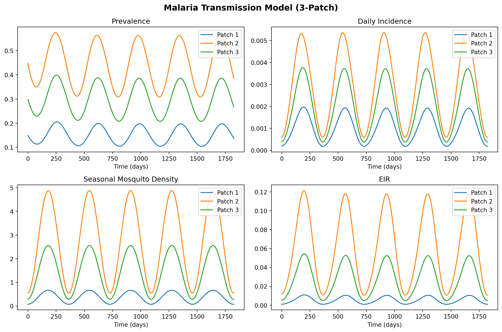

import numpy as np
import starsim as ss
from scipy.stats import norm
def analytical_mosquito_density(ivector, hvector, pij, a, b, c, mu, r, tau):
xvector = ivector / r
gvector = xvector * r / (1 - xvector)
n = len(xvector)
fvector = np.zeros(n)
for i in range(n):
k_i = np.sum(pij[:, i] * xvector * hvector) / np.sum(pij[:, i] * hvector)
fvector[i] = b * c * k_i / (a * c * k_i / mu + 1)
fmatrix = np.diag(fvector)
cvector = np.linalg.solve(pij @ fmatrix, gvector)
m = cvector * mu / a**2 / np.exp(-mu * tau)
return m
def make_seasonal_sinusoidal(amplitude=0.8, peak_day=180):
def seasonal_fn(t):
day_of_year = t % 365
return max(0.0, 1 + amplitude * np.sin(2 * np.pi * (day_of_year - peak_day + 365/4) / 365))
return seasonal_fn
# Default 3-patch data
default_hvector = np.array([5000.0, 10000.0, 8000.0])
default_ivector = np.array([0.001, 0.003, 0.002])
default_pij = np.array([
[0.85, 0.10, 0.05],
[0.08, 0.80, 0.12],
[0.06, 0.09, 0.85],
])
class Malaria_SS(ss.Module):
def __init__(self, hvector=None, ivector=None, pij=None, seasonal_fn=None, **kwargs):
super().__init__()
self.define_pars(
a=0.3, b=0.1, c=0.214,
r=1/150, mu=1/10, tau=10,
)
self.update_pars(**kwargs)
self.hvector = hvector if hvector is not None else default_hvector.copy()
self.ivector = ivector if ivector is not None else default_ivector.copy()
self.pij = pij if pij is not None else default_pij.copy()
self.seasonal_fn = seasonal_fn if seasonal_fn is not None else make_seasonal_sinusoidal()
self.numpatch = len(self.hvector)
self.c_labels = {}
for i in range(self.numpatch):
self.c_labels[f'X_{i}'] = f'Prevalence (Patch {i+1})'
self.c_labels[f'C_{i}'] = f'Cumulative incidence (Patch {i+1})'
self.c = {key: 0.0 for key in self.c_labels}
self.m_base = None
def init_post(self):
super().init_post()
p = self.pars
self.m_base = analytical_mosquito_density(
self.ivector, self.hvector, self.pij,
p.a, p.b, p.c, p.mu, p.r, p.tau,
)
self.m_base = np.clip(self.m_base, 1e-10, None)
x0 = self.ivector / p.r
for i in range(self.numpatch):
self.c[f'X_{i}'] = x0[i]
self.c[f'C_{i}'] = 0.0
def step(self):
p = self.pars
c = self.c
n = self.numpatch
t = self.now
dt = float(self.dt)
X = np.array([c[f'X_{i}'] for i in range(n)])
m = self.m_base * self.seasonal_fn(t)
H = self.hvector
pij = self.pij
k = (X * H) @ pij / (H @ pij)
Z_numer = p.a**2 * p.b * p.c * np.exp(-p.mu * p.tau) * k
Z_denom = p.a * p.c * k + p.mu
dC = (m * Z_numer / Z_denom) @ pij.T * (1 - X)
dX = dC - p.r * X
for i in range(n):
c[f'X_{i}'] += dX[i] * dt
c[f'C_{i}'] += dC[i] * dt
def init_results(self):
super().init_results()
results = []
for key, label in self.c_labels.items():
results.append(ss.Result(key, label=label))
for i in range(self.numpatch):
results.append(ss.Result(f'daily_inc_{i}', label=f'Daily incidence (Patch {i+1})'))
results.append(ss.Result(f'm_seasonal_{i}', label=f'Mosquito density (Patch {i+1})'))
results.append(ss.Result(f'eir_{i}', label=f'EIR (Patch {i+1})'))
self.define_results(*results)
def update_results(self):
super().update_results()
ti = self.ti
c = self.c
p = self.pars
n = self.numpatch
t = self.now
for key in c:
self.results[key][ti] = c[key]
X = np.array([c[f'X_{i}'] for i in range(n)])
m_seasonal = self.m_base * self.seasonal_fn(t)
H = self.hvector
pij = self.pij
k = (X * H) @ pij / (H @ pij)
Z_numer = p.a**2 * p.b * p.c * np.exp(-p.mu * p.tau) * k
Z_denom = p.a * p.c * k + p.mu
dC = (m_seasonal * Z_numer / Z_denom) @ pij.T * (1 - X)
Z = p.a * p.c * k * np.exp(-p.mu * p.tau) / (p.a * p.c * k + p.mu)
eir = m_seasonal * p.a * (Z @ pij.T)
for i in range(n):
self.results[f'daily_inc_{i}'][ti] = dC[i]
self.results[f'm_seasonal_{i}'][ti] = m_seasonal[i]
self.results[f'eir_{i}'][ti] = eir[i]Malaria Metapopulation Model (Python)
Overview
This is the Python companion to the Julia 14_malaria vignette. We implement a multi-patch Ross-Macdonald malaria model as a Starsim module with Euler integration and seasonal mosquito forcing, following code/malaria_demo/demo_sim_ss.py.
Define the malaria module
Run the simulation
mal = Malaria_SS()
sim = ss.Sim(modules=mal, copy_inputs=False, start=0, stop=365*5, dt=1, n_agents=1)
sim.run()Initializing sim with 1 agents
Running 0.0 ( 0/1826) (0.00 s) ———————————————————— 0%
Running 10.0 (10/1826) (0.00 s) ———————————————————— 1%
Running 20.0 (20/1826) (0.00 s) ———————————————————— 1%
Running 30.0 (30/1826) (0.00 s) ———————————————————— 2%
Running 40.0 (40/1826) (0.01 s) ———————————————————— 2%
Running 50.0 (50/1826) (0.01 s) ———————————————————— 3%
Running 60.0 (60/1826) (0.01 s) ———————————————————— 3%
Running 70.0 (70/1826) (0.01 s) ———————————————————— 4%
Running 80.0 (80/1826) (0.01 s) ———————————————————— 4%
Running 90.0 (90/1826) (0.01 s) ———————————————————— 5%
Running 100.0 (100/1826) (0.01 s) •——————————————————— 6%
Running 110.0 (110/1826) (0.01 s) •——————————————————— 6%
Running 120.0 (120/1826) (0.01 s) •——————————————————— 7%
Running 130.0 (130/1826) (0.02 s) •——————————————————— 7%
Running 140.0 (140/1826) (0.02 s) •——————————————————— 8%
Running 150.0 (150/1826) (0.02 s) •——————————————————— 8%
Running 160.0 (160/1826) (0.02 s) •——————————————————— 9%
Running 170.0 (170/1826) (0.02 s) •——————————————————— 9%
Running 180.0 (180/1826) (0.02 s) •——————————————————— 10%
Running 190.0 (190/1826) (0.02 s) ••—————————————————— 10%
Running 200.0 (200/1826) (0.02 s) ••—————————————————— 11%
Running 210.0 (210/1826) (0.02 s) ••—————————————————— 12%
Running 220.0 (220/1826) (0.03 s) ••—————————————————— 12%
Running 230.0 (230/1826) (0.03 s) ••—————————————————— 13%
Running 240.0 (240/1826) (0.03 s) ••—————————————————— 13%
Running 250.0 (250/1826) (0.03 s) ••—————————————————— 14%
Running 260.0 (260/1826) (0.03 s) ••—————————————————— 14%
Running 270.0 (270/1826) (0.03 s) ••—————————————————— 15%
Running 280.0 (280/1826) (0.03 s) •••————————————————— 15%
Running 290.0 (290/1826) (0.03 s) •••————————————————— 16%
Running 300.0 (300/1826) (0.04 s) •••————————————————— 16%
Running 310.0 (310/1826) (0.04 s) •••————————————————— 17%
Running 320.0 (320/1826) (0.04 s) •••————————————————— 18%
Running 330.0 (330/1826) (0.04 s) •••————————————————— 18%
Running 340.0 (340/1826) (0.04 s) •••————————————————— 19%
Running 350.0 (350/1826) (0.04 s) •••————————————————— 19%
Running 360.0 (360/1826) (0.04 s) •••————————————————— 20%
Running 370.0 (370/1826) (0.04 s) ••••———————————————— 20%
Running 380.0 (380/1826) (0.04 s) ••••———————————————— 21%
Running 390.0 (390/1826) (0.05 s) ••••———————————————— 21%
Running 400.0 (400/1826) (0.05 s) ••••———————————————— 22%
Running 410.0 (410/1826) (0.05 s) ••••———————————————— 23%
Running 420.0 (420/1826) (0.05 s) ••••———————————————— 23%
Running 430.0 (430/1826) (0.05 s) ••••———————————————— 24%
Running 440.0 (440/1826) (0.05 s) ••••———————————————— 24%
Running 450.0 (450/1826) (0.05 s) ••••———————————————— 25%
Running 460.0 (460/1826) (0.05 s) •••••——————————————— 25%
Running 470.0 (470/1826) (0.06 s) •••••——————————————— 26%
Running 480.0 (480/1826) (0.06 s) •••••——————————————— 26%
Running 490.0 (490/1826) (0.06 s) •••••——————————————— 27%
Running 500.0 (500/1826) (0.06 s) •••••——————————————— 27%
Running 510.0 (510/1826) (0.06 s) •••••——————————————— 28%
Running 520.0 (520/1826) (0.06 s) •••••——————————————— 29%
Running 530.0 (530/1826) (0.06 s) •••••——————————————— 29%
Running 540.0 (540/1826) (0.06 s) •••••——————————————— 30%
Running 550.0 (550/1826) (0.06 s) ••••••—————————————— 30%
Running 560.0 (560/1826) (0.07 s) ••••••—————————————— 31%
Running 570.0 (570/1826) (0.07 s) ••••••—————————————— 31%
Running 580.0 (580/1826) (0.07 s) ••••••—————————————— 32%
Running 590.0 (590/1826) (0.07 s) ••••••—————————————— 32%
Running 600.0 (600/1826) (0.07 s) ••••••—————————————— 33%
Running 610.0 (610/1826) (0.07 s) ••••••—————————————— 33%
Running 620.0 (620/1826) (0.07 s) ••••••—————————————— 34%
Running 630.0 (630/1826) (0.07 s) ••••••—————————————— 35%
Running 640.0 (640/1826) (0.07 s) •••••••————————————— 35%
Running 650.0 (650/1826) (0.08 s) •••••••————————————— 36%
Running 660.0 (660/1826) (0.08 s) •••••••————————————— 36%
Running 670.0 (670/1826) (0.08 s) •••••••————————————— 37%
Running 680.0 (680/1826) (0.08 s) •••••••————————————— 37%
Running 690.0 (690/1826) (0.08 s) •••••••————————————— 38%
Running 700.0 (700/1826) (0.08 s) •••••••————————————— 38%
Running 710.0 (710/1826) (0.08 s) •••••••————————————— 39%
Running 720.0 (720/1826) (0.08 s) •••••••————————————— 39%
Running 730.0 (730/1826) (0.09 s) ••••••••———————————— 40%
Running 740.0 (740/1826) (0.09 s) ••••••••———————————— 41%
Running 750.0 (750/1826) (0.09 s) ••••••••———————————— 41%
Running 760.0 (760/1826) (0.09 s) ••••••••———————————— 42%
Running 770.0 (770/1826) (0.09 s) ••••••••———————————— 42%
Running 780.0 (780/1826) (0.09 s) ••••••••———————————— 43%
Running 790.0 (790/1826) (0.09 s) ••••••••———————————— 43%
Running 800.0 (800/1826) (0.09 s) ••••••••———————————— 44%
Running 810.0 (810/1826) (0.09 s) ••••••••———————————— 44%
Running 820.0 (820/1826) (0.10 s) ••••••••———————————— 45%
Running 830.0 (830/1826) (0.10 s) •••••••••——————————— 46%
Running 840.0 (840/1826) (0.10 s) •••••••••——————————— 46%
Running 850.0 (850/1826) (0.10 s) •••••••••——————————— 47%
Running 860.0 (860/1826) (0.10 s) •••••••••——————————— 47%
Running 870.0 (870/1826) (0.10 s) •••••••••——————————— 48%
Running 880.0 (880/1826) (0.10 s) •••••••••——————————— 48%
Running 890.0 (890/1826) (0.10 s) •••••••••——————————— 49%
Running 900.0 (900/1826) (0.10 s) •••••••••——————————— 49%
Running 910.0 (910/1826) (0.11 s) •••••••••——————————— 50%
Running 920.0 (920/1826) (0.11 s) ••••••••••—————————— 50%
Running 930.0 (930/1826) (0.11 s) ••••••••••—————————— 51%
Running 940.0 (940/1826) (0.11 s) ••••••••••—————————— 52%
Running 950.0 (950/1826) (0.11 s) ••••••••••—————————— 52%
Running 960.0 (960/1826) (0.11 s) ••••••••••—————————— 53%
Running 970.0 (970/1826) (0.11 s) ••••••••••—————————— 53%
Running 980.0 (980/1826) (0.11 s) ••••••••••—————————— 54%
Running 990.0 (990/1826) (0.12 s) ••••••••••—————————— 54%
Running 1000.0 (1000/1826) (0.12 s) ••••••••••—————————— 55%
Running 1010.0 (1010/1826) (0.12 s) •••••••••••————————— 55%
Running 1020.0 (1020/1826) (0.12 s) •••••••••••————————— 56%
Running 1030.0 (1030/1826) (0.12 s) •••••••••••————————— 56%
Running 1040.0 (1040/1826) (0.12 s) •••••••••••————————— 57%
Running 1050.0 (1050/1826) (0.12 s) •••••••••••————————— 58%
Running 1060.0 (1060/1826) (0.12 s) •••••••••••————————— 58%
Running 1070.0 (1070/1826) (0.13 s) •••••••••••————————— 59%
Running 1080.0 (1080/1826) (0.13 s) •••••••••••————————— 59%
Running 1090.0 (1090/1826) (0.13 s) •••••••••••————————— 60%
Running 1100.0 (1100/1826) (0.13 s) ••••••••••••———————— 60%
Running 1110.0 (1110/1826) (0.13 s) ••••••••••••———————— 61%
Running 1120.0 (1120/1826) (0.13 s) ••••••••••••———————— 61%
Running 1130.0 (1130/1826) (0.13 s) ••••••••••••———————— 62%
Running 1140.0 (1140/1826) (0.13 s) ••••••••••••———————— 62%
Running 1150.0 (1150/1826) (0.13 s) ••••••••••••———————— 63%
Running 1160.0 (1160/1826) (0.14 s) ••••••••••••———————— 64%
Running 1170.0 (1170/1826) (0.14 s) ••••••••••••———————— 64%
Running 1180.0 (1180/1826) (0.14 s) ••••••••••••———————— 65%
Running 1190.0 (1190/1826) (0.14 s) •••••••••••••——————— 65%
Running 1200.0 (1200/1826) (0.14 s) •••••••••••••——————— 66%
Running 1210.0 (1210/1826) (0.14 s) •••••••••••••——————— 66%
Running 1220.0 (1220/1826) (0.14 s) •••••••••••••——————— 67%
Running 1230.0 (1230/1826) (0.14 s) •••••••••••••——————— 67%
Running 1240.0 (1240/1826) (0.15 s) •••••••••••••——————— 68%
Running 1250.0 (1250/1826) (0.15 s) •••••••••••••——————— 69%
Running 1260.0 (1260/1826) (0.15 s) •••••••••••••——————— 69%
Running 1270.0 (1270/1826) (0.15 s) •••••••••••••——————— 70%
Running 1280.0 (1280/1826) (0.15 s) ••••••••••••••—————— 70%
Running 1290.0 (1290/1826) (0.15 s) ••••••••••••••—————— 71%
Running 1300.0 (1300/1826) (0.15 s) ••••••••••••••—————— 71%
Running 1310.0 (1310/1826) (0.15 s) ••••••••••••••—————— 72%
Running 1320.0 (1320/1826) (0.16 s) ••••••••••••••—————— 72%
Running 1330.0 (1330/1826) (0.16 s) ••••••••••••••—————— 73%
Running 1340.0 (1340/1826) (0.16 s) ••••••••••••••—————— 73%
Running 1350.0 (1350/1826) (0.16 s) ••••••••••••••—————— 74%
Running 1360.0 (1360/1826) (0.16 s) ••••••••••••••—————— 75%
Running 1370.0 (1370/1826) (0.16 s) •••••••••••••••————— 75%
Running 1380.0 (1380/1826) (0.16 s) •••••••••••••••————— 76%
Running 1390.0 (1390/1826) (0.16 s) •••••••••••••••————— 76%
Running 1400.0 (1400/1826) (0.16 s) •••••••••••••••————— 77%
Running 1410.0 (1410/1826) (0.17 s) •••••••••••••••————— 77%
Running 1420.0 (1420/1826) (0.17 s) •••••••••••••••————— 78%
Running 1430.0 (1430/1826) (0.17 s) •••••••••••••••————— 78%
Running 1440.0 (1440/1826) (0.17 s) •••••••••••••••————— 79%
Running 1450.0 (1450/1826) (0.17 s) •••••••••••••••————— 79%
Running 1460.0 (1460/1826) (0.17 s) ••••••••••••••••———— 80%
Running 1470.0 (1470/1826) (0.17 s) ••••••••••••••••———— 81%
Running 1480.0 (1480/1826) (0.17 s) ••••••••••••••••———— 81%
Running 1490.0 (1490/1826) (0.18 s) ••••••••••••••••———— 82%
Running 1500.0 (1500/1826) (0.18 s) ••••••••••••••••———— 82%
Running 1510.0 (1510/1826) (0.18 s) ••••••••••••••••———— 83%
Running 1520.0 (1520/1826) (0.18 s) ••••••••••••••••———— 83%
Running 1530.0 (1530/1826) (0.18 s) ••••••••••••••••———— 84%
Running 1540.0 (1540/1826) (0.18 s) ••••••••••••••••———— 84%
Running 1550.0 (1550/1826) (0.18 s) ••••••••••••••••———— 85%
Running 1560.0 (1560/1826) (0.18 s) •••••••••••••••••——— 85%
Running 1570.0 (1570/1826) (0.19 s) •••••••••••••••••——— 86%
Running 1580.0 (1580/1826) (0.19 s) •••••••••••••••••——— 87%
Running 1590.0 (1590/1826) (0.19 s) •••••••••••••••••——— 87%
Running 1600.0 (1600/1826) (0.19 s) •••••••••••••••••——— 88%
Running 1610.0 (1610/1826) (0.19 s) •••••••••••••••••——— 88%
Running 1620.0 (1620/1826) (0.19 s) •••••••••••••••••——— 89%
Running 1630.0 (1630/1826) (0.19 s) •••••••••••••••••——— 89%
Running 1640.0 (1640/1826) (0.19 s) •••••••••••••••••——— 90%
Running 1650.0 (1650/1826) (0.19 s) ••••••••••••••••••—— 90%
Running 1660.0 (1660/1826) (0.20 s) ••••••••••••••••••—— 91%
Running 1670.0 (1670/1826) (0.20 s) ••••••••••••••••••—— 92%
Running 1680.0 (1680/1826) (0.20 s) ••••••••••••••••••—— 92%
Running 1690.0 (1690/1826) (0.20 s) ••••••••••••••••••—— 93%
Running 1700.0 (1700/1826) (0.20 s) ••••••••••••••••••—— 93%
Running 1710.0 (1710/1826) (0.20 s) ••••••••••••••••••—— 94%
Running 1720.0 (1720/1826) (0.20 s) ••••••••••••••••••—— 94%
Running 1730.0 (1730/1826) (0.20 s) ••••••••••••••••••—— 95%
Running 1740.0 (1740/1826) (0.21 s) •••••••••••••••••••— 95%
Running 1750.0 (1750/1826) (0.21 s) •••••••••••••••••••— 96%
Running 1760.0 (1760/1826) (0.21 s) •••••••••••••••••••— 96%
Running 1770.0 (1770/1826) (0.21 s) •••••••••••••••••••— 97%
Running 1780.0 (1780/1826) (0.21 s) •••••••••••••••••••— 98%
Running 1790.0 (1790/1826) (0.21 s) •••••••••••••••••••— 98%
Running 1800.0 (1800/1826) (0.21 s) •••••••••••••••••••— 99%
Running 1810.0 (1810/1826) (0.21 s) •••••••••••••••••••— 99%
Running 1820.0 (1820/1826) (0.22 s) •••••••••••••••••••— 100%Sim(n=1; 0—1825)Plot results
import pylab as pl
res = sim.results.malaria_ss
npts = len(res.X_0.values)
tvec = np.arange(npts)
patches = ['Patch 1', 'Patch 2', 'Patch 3']
fig, axes = pl.subplots(2, 2, figsize=(12, 8))
ax = axes[0, 0]
for i, name in enumerate(patches):
ax.plot(tvec, res[f'X_{i}'].values, label=name)
ax.set_title('Prevalence')
ax.set_xlabel('Time (days)')
ax.legend()
ax = axes[0, 1]
for i, name in enumerate(patches):
ax.plot(tvec, res[f'daily_inc_{i}'].values, label=name)
ax.set_title('Daily Incidence')
ax.set_xlabel('Time (days)')
ax.legend()
ax = axes[1, 0]
for i, name in enumerate(patches):
ax.plot(tvec, res[f'm_seasonal_{i}'].values, label=name)
ax.set_title('Seasonal Mosquito Density')
ax.set_xlabel('Time (days)')
ax.legend()
ax = axes[1, 1]
for i, name in enumerate(patches):
ax.plot(tvec, res[f'eir_{i}'].values, label=name)
ax.set_title('EIR')
ax.set_xlabel('Time (days)')
ax.legend()
pl.suptitle('Malaria Transmission Model (3-Patch)', fontsize=14, fontweight='bold')
pl.tight_layout()
pl.show()